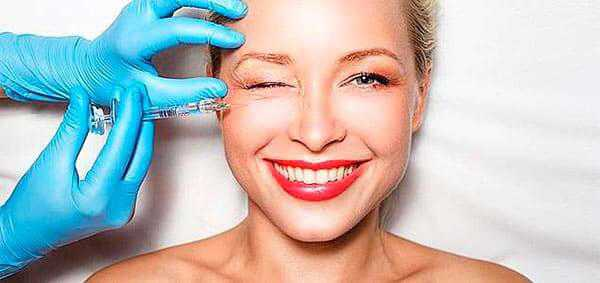
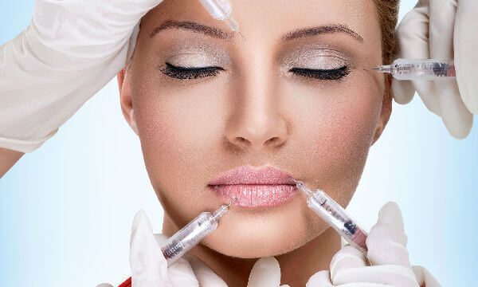

Инъекционная косметология – эффективный укол красоты
Инъекционная косметология вызывает ряд опасений у многих женщин. Ведь с помощью иглы в кожу вводятся необходимые вещества, то есть, нарушается кожный покров. Есть некоторые риски – заражения, покраснения или дискомфорт. Многие также боятся
болевых ощущений, сопровождающих процедуру. Но на самом деле инъекционная косметология является практически наиболее эффективным методом достичь видимого результата. И она не настолько страшна, как многие думают. В этой статье мы подробнее
расскажем об “уколах красоты”.

Инъекционная косметология – это группа процедур, основанных на введении препарата с помощью иглы. Самые распространенные методы – это мезотерапия, контурная пластика, биоревитализация. Также специалисты рекомендуют ботулинотерапию,
плазмолифтинг, биоармирование. К инъекционной косметологии относят и другие методы, с непонятными названиями, однако вышеперечисленные являются основными. Другие процедуры – это усовершенствованные виды существующих.
Что такое...
Биоревитализация– стимулирование самовосстановления кожи с помощью воздействия полисахаридов. Инъекция доставляет в нужный участок препарат на основе гиалуроновой кислоты, который некоторое время задерживается в коже и провоцирует
природные восстанавливающие процессы организма.
Мезотерапия – процедура, а основе которой заложены инъекции лекарственных препаратов. Зачастую этот метод рекомендуют для борьбы с куперозом, угревой болезнью, рубцами. Производит увлажняющий эффект.
Контурная пластика – метод, базирующийся на щадящих внутрикожных инъекциях. Разглаживает складки и морщины, возвращает форму лица, увеличивает объем губ. Для контурной пластики применяют специальные филлеры на основе гиалуроновой
кислоты.
Процедуру, необходимую конкретно Вам порекомендует специалист. Будут учитываться преследуемые цели и особенности Вашего организма.
Результаты инъекционной косметологии:
- устранение признаков старения кожи (дряблости, сухости и т.д.);
- увеличение объема губ (контурная пластика);
- удаление морщин;
- тонизированная, увлажненная кожа.
Преимущества инъекционной косметологии
Сила инъекционной косметологии в том, что вещество (зачастую, это препараты на основе гиалуроновой кислоты) напрямую вводят в нужное место. Особенно преимущества инъекционного метода проявляются на зонах, куда не достать даже с помощью лазера,
не то что косметических средств. Если говорить об аппаратной косметологии, то вводимые вещества так или иначе модифицируются. А укол доставляет нужный препарат в нужной консистенции в нужное место.
Даже болевые ощущения от укола – это плюс в пользу инъекции. Ведь тогда организм моментально реагирует, сосуды расширяются, деятельность клеток активизируется. А это приводит к лучшему и достаточно быстрому усвоению препарата.
Если говорить о такой процедуре, как контурная пластика, то даже не стоит искать лишних аргументов. Суть метода в том, что в нужные участки вводятся филлеры, которые заполняют необходимые фрагменты. В итоге – результат мгновенный и, в буквальном
смысле, – на лицо.
Пять “за” в пользу инъекционной косметологии:
- Аллергические реакции маловероятны.
- Процедуры терпимы и не требуют анестезии.
- Нет необходимости в реабилитационном периоде.
- Эффект заметен практически сразу после процедуры.
- Улучшает действие аппаратной косметологии. Достичь максимального результата можно, если использовать эти методы в комплексе.

Инъекционная косметология – это эффективный способ достичь желаемых результатов без хирургического вмешательства. И несмотря на предрассудки, это наиболее действенный метод.